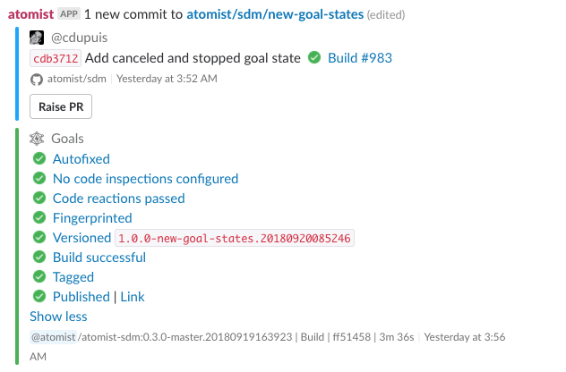

Create Goals
Goals are reusable parts of functionality used within a CI/CD context. Think of tasks like starting a build, deploying your application to Kubernetes. These goals consist primarily of:
- something to identify the goal by, i.e. a unique name
- a block of code to be executed when the task needs to be run
- metadata to describe the goal and when it is applicable.
The most important SDM functionality relates to what happens on a push to a repository. An SDM allows you to process a push in any way you choose, but typically you want it to initiate a delivery flow. In short, an SDM allows you to set goals on as a response to an event, for example a push.
Goals can be completed by an SDM or elsewhere; for example, the SDM can recognize that a goal is complete when a build finishes in an external system.
The goals set on a push don’t need to be the same every time. Unlike the static pipelines you may be used to, with Atomist the delivery flow is not necessarily the same for every change. In essense, Atomist allows you to create a pipeline per push.
Goals aren’t configured per repository. They are chosen dynamically, in response to any push in any repository, based on the code and the context. What kind of project is it? What branch was pushed? Is there a pull request? Which files changed? Brand-new repositories require no configuration.
Goals are not necessarily sequential–by default they execute in parallel–but certain goals, such as deployment, have preconditions (goals that must have previously completed successfully).
In Slack, a push notification with several goals looks like this:

This page shows how to
- create goals
- teach them what to do
- require approval
The next page describes how to set goals for each push.
Create goals
Set up goals wherever you configure your SDM, probably in lib/machine/machine.ts. This example comes
from an SDM for Java Spring Boot web services.
A Goal object supplies its name, descriptions for its various possible states, and an implementation.
To experiment, you might want to
Or explore the built-in goal implementations:
- Build - run a build, with an existing integration or your own function
- Autofix - apply formatting changes, CHANGELOG updates, etc. as automatic commits
- AutoInspect - inspect the new code
- PushImpact - run any other function as a response to the push
- Fingerprint - compute a snapshot of some aspect of the code, for tracking
After you’ve created some goals, choose when to set them.
Creating a goal
You can define your own goal to extend Atomist’s out of the box capabilities. For example, you can:
- Delegate to a CLI by spawning a process and waiting for its result
- Call the API of a third party service
- Use a Node module or Atomist’s API to implement your functionality right in TypeScript
To define your own goal, you must provide a name and description and a function for how to execute it.
Using the goal function
Use the goal function from @atomist/sdm; pass it an object with a displayName and as many properties out of GoalDefinition as you choose.
Also pass a function to call when it’s time to execute the goal. That function can return void or an ExecuteGoalResult.
For example:
const releaseDocs = goal( { displayName: "My new goal"}, async (inv: GoalInvocation) => { // do what is needed return { code: 0 }; });
Waiting on a Precondition
Sometimes goals need other goals to have completed before they can start. This is handled while setting goals on a push.
Sometimes they wait on external conditions, such as another service having started. This is handled with wait rules.
Built-in Goals
A goal object has some identifying information, code to fulfill the goal, and optional preconditions (goals that need to complete before it can start). Some common goals have their own constructors. Atomist provides a couple of out of the box goal implementations for common CI tasks to be executed within a pipeline.
AutoInspect
Run an inspection on the code; if the code doesn’t pass, you can fail the goals or require approval (a button push). To use it, you’ll need to create one, set it on each push, and register inspections on it.
Instantiate an empty one:
export const codeInspection = new AutoCodeInspection();
And set it when you want it to run on a push. Here’s the shortest way to run this goal on every push:
sdm.addGoalContributions(goalContributors( onAnyPush().setGoals(goals("Inspections").plan(codeInspection))))
Now the fun part: register inspections on it. Check the Inspections page for more on how to write inspections. Once you have an AutoInspectRegistration, register it on your goal:
codeInspection.with(MyAutoInspectRegistration) .with(AnotherInspectRegistration);
You can register any number of inspections. You can call with on the goal at any point in SDM configuration.
If no inspections are registered, the goal will succeed. If any registration’s onInspectionResult returns “fail”, the goal will fail. If none return “fail” but one returns “require approval”, the goal will go to Waiting for Approval state until someone clicks the Approve button in Slack or on the Atomist web interface.
Autofix
This goal tells the SDM to check each push and create commits on top of it to correct fixable violations in the code. For example, you can use this for automatic linting or to add license headers where they have been omitted.
Instantiate the goal:
const autofixGoal = new Autofix().with(AddApacheLicenseFileAutofix);
Add autofix registrations: see the autofix documentation.
Then you add the goal to your goal set. For example, if you want to add the goal to each push:
sdm.addPushRules(onAnyPush().setGoals(autofix));
Each autofix registration can include a push test to select the projects it can operate on.
PushImpact
This allows you to run an arbitrary function in response to a push, with information about the changes in the push.
For example, the following function lists changed files to any Slack channels linked to a repo:
export const listChangedFiles: PushImpactRegistration = { action(i: PushImpactListenerInvocation) { return i.addressChannels(`Files changed:\n${i.filesChanged.map(n => "- `" + n + "`").join("\n")}`); }, name: "List files changed", };
If you don’t have a custom name or PushTest, you can use the following shorthand, supplying only the
PushImpactListener function:
export const listChangedFiles = i => i.addressChannels(`Files changed:\n${i.filesChanged.map(n => "- `" + n + "`").join("\n")}`);
Create aPushImpact goal and add listeners as follows:
const pushImpactGoal = new PushImpact().with(listChangedFiles)
If your reaction is essentially a review–for example, it’s associated with a known problem in a particular file location–use a
CodeInspectionRegistrationrather than aPushImpactRegistration.
Build
This one has its own section.